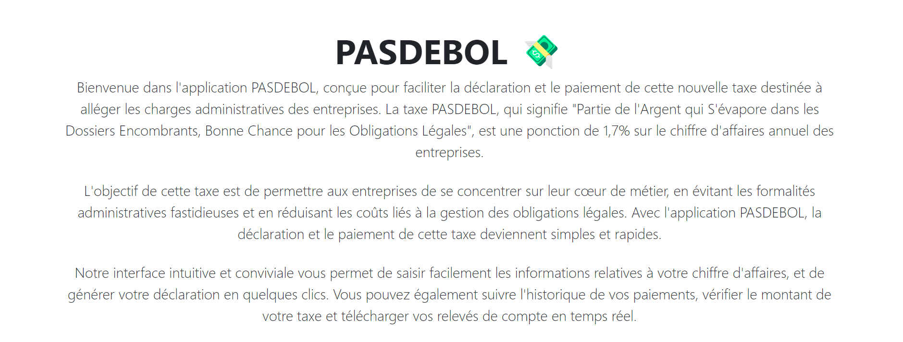

Tp audit de code

Dans le cadre de cet exercice, nous avons abordé la correction d'erreurs sur un site web ainsi que la validation de la sécurité d'une application en analysant son code source.
- Objectif: Rectifier les erreurs du site web et évaluer la sécurité d'une application en examinant son code source.
- Contraintes: À effectuer dans le cadre d'un contrôle sur une matinée
- Étapes: J'ai débuté en prenant connaissance du site, puis j'ai énuméré les erreurs une par une.
- Résultats: J'ai réussi à corriger certaines erreurs du site web (voir pièce jointe de mon rendu).
- Lien vers mon devoir